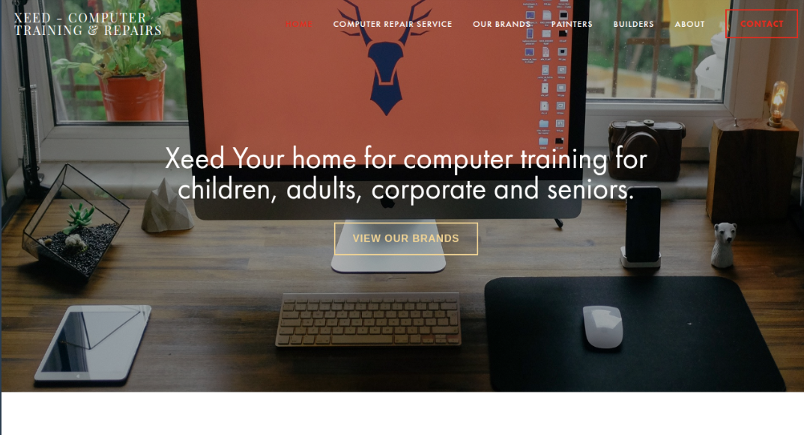
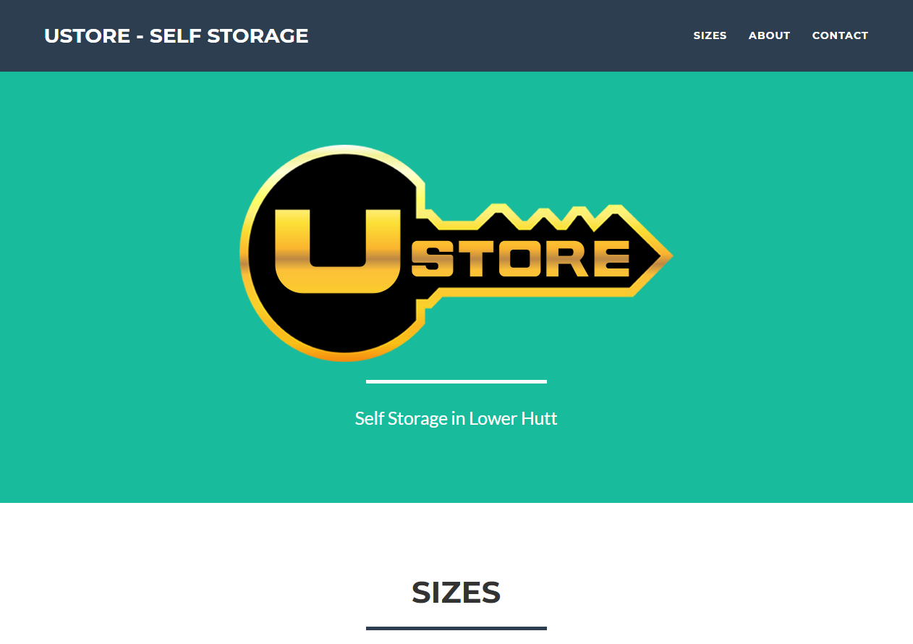

I specialize in bridging the gap between complex IT infrastructure and user-centric digital design. From managing secure network environments to developing custom web platforms from the ground up, I focus on building reliable, scalable, and efficient solutions.

A streamlined corporate site designed for high-impact communication and modern branding.

Developed a custom site using bootstrap for the business to allow new customers to find the business.
Was a business that created Interactive Inductions for inducting people to the site. I modernised the site back in 2015 by using Wordpress.
Role: IT Support Specialist & Infrastructure Lead
"Modernizing community infrastructure through a cloud-first identity strategy and a complete redesign of the campus-wide network architecture."
I utilized my technical training to overhaul the campus network, ensuring high-availability and stability for all users. I was responsible for the end-to-end implementation of Microsoft Entra ID to centralize user governance and secure cloud resources.
Role: IT Tutor & Office Administrator
"Facilitating high-quality IT education through curriculum development, student tutoring, and the technical maintenance of specialized computer lab environments."
I balanced administrative operations with technical instruction, ensuring the training facility remained operational for all students. I led the 2024 UI project to modernize the platform's frontend using Bootstrap 5 and contributed to the design of new IT course materials.
Role: Lead Designer & Technical Consultant (2016 — 2017)
"Working in a high-speed startup environment means turning ambitious, broad-ranging ideas into functional digital assets overnight.
During my tenure at XEED, I supported a rapid-pivot business model. I was responsible for the end-to-end design of a unified digital platform that attempted to bridge five distinct industries under one umbrella.